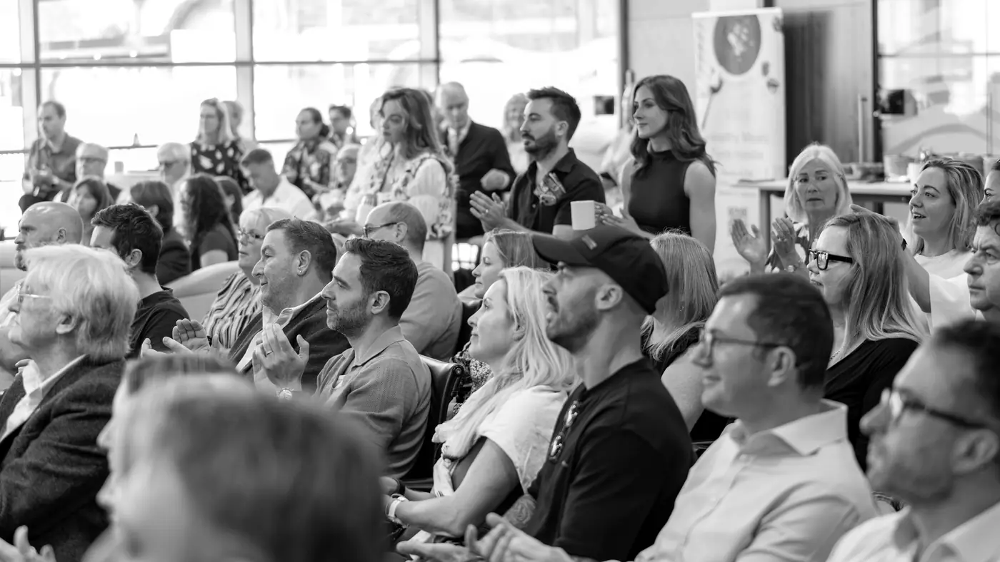

TEKEX IOM3
Global Innovation. Isle of Man Opportunity.
Isle of ManSantander Work Cafe
View event : TEKEX IOM3We bring founders, investors and business leaders together across Jersey, Guernsey and the Isle of Man to help innovative businesses raise capital, accelerate growth and scale.
Explore eventsThe next events are being lined up now. Stay in the loop to hear first.
Global Innovation. Isle of Man Opportunity.
Isle of ManSantander Work Cafe
View event : TEKEX IOM3The organisations helping us build a more connected innovation economy.
Our islands have the ambition, capital and expertise to build exceptional businesses. Too often, they exist in separate networks.
TEKEX brings those networks together, helping founders meet investors, businesses find expertise and ideas reach new customers and markets.
Put capital behind ambition.
We connect founders with investors, give businesses seeking investment greater visibility and create opportunities for conversations to continue beyond the event.
Show people what is possible.
We showcase ambitious businesses, share fresh thinking and give local ideas a wider stage, making innovation visible and showing what is possible.
Accelerate opportunity into outcomes.
We help businesses find the customers, advisers, mentors and partnerships that can move them forward, turning connections into practical progress.

For founders, investors, business leaders, advisers, technologists, policymakers, researchers and anyone curious about innovation across the islands. No specialist knowledge is required.
Raising capital or ready to grow? Connect with investors, customers, advisers and mentors who could help your business take its next step.
hello@tekex.co : founder enquiriesLooking for your next opportunity? Meet ambitious founders and discover businesses you might otherwise never encounter, across the islands and beyond.
hello@tekex.co : investor enquiriesBe part of the islands’ innovation ecosystem. Connect with ambitious founders, contribute your expertise and explore partnership opportunities with TEKEX.
hello@tekex.co : business enquiriesHave a question, an idea or an introduction to make? Whether you’re ready to get involved or simply curious about TEKEX, we’d love to hear from you.

Founder
Ed founded TEKEX to bring ambitious people together and create opportunities across the Crown Dependencies. He is a Partner at Potting Shed.
ed@tekex.co
Partner
Tom brings creative energy and strategic thinking to TEKEX, helping shape how the network looks, feels and communicates. He is a Partner at Potting Shed.
tom@tekex.co
GSY Lead
Louis leads TEKEX in Guernsey, using his business experience to support local founders and build valuable connections. He is a Management Consulting Manager at BDO.
louis@tekex.co
IOM Lead
Jenson leads TEKEX in the Isle of Man, bringing expertise in marketing, growth and helping businesses build momentum. He is the founder of Manx Growth Solutions.
jenson@tekex.coIt was an absolute pleasure speaking at TEKEX. What a community you have built!
 Dr Omar HatamlehCAIO, NASA
Dr Omar HatamlehCAIO, NASATEKEX has brought me to Jersey and connected me to something incredibly exciting.
 Chris SheldrickCEO, what3words
Chris SheldrickCEO, what3wordsBuilding something the islands should know about?
Talk to usGet upcoming event announcements and booking details from Jersey, Guernsey and the Isle of Man, straight to your inbox.